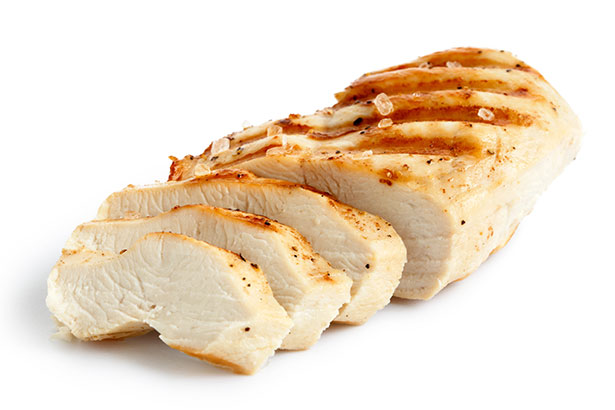
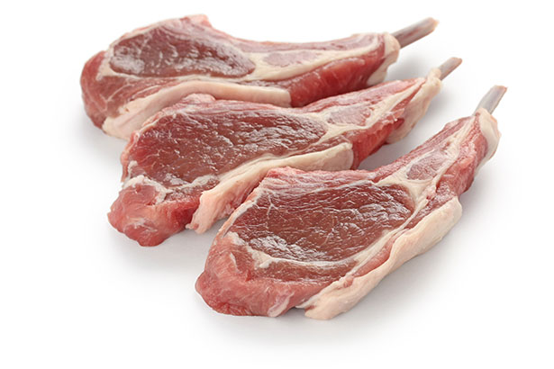
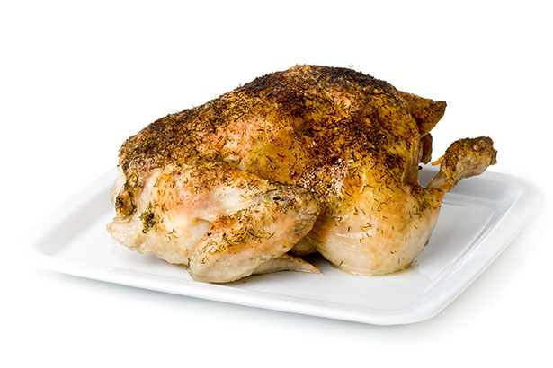
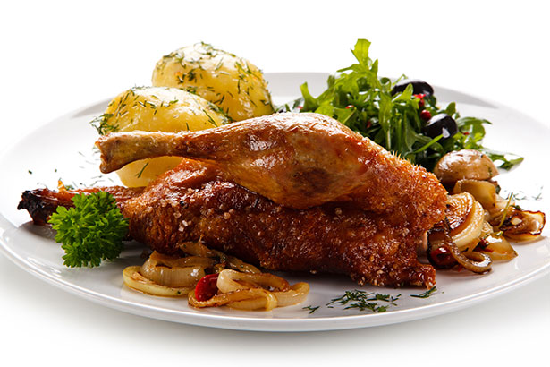

There are many different types of meat, and all have been part of the human diet for thousands of years.
Generally speaking, meat offers excellent nutritional value and provides a good range of essential nutrients.
chicken

Alongside beef and pork, chicken is one of the ‘big three’ popularity-wise.
However,chicken is a different classification of meat and comes under the poultry category.
People commonly refer to poultry as ‘white meat’.
As one of the most popular foods in the world, there are all sorts of chicken-based foods.
These range from fried and roasted chicken to chicken soup and even chicken popcorn.
Nutrition Facts
Nutrient
Amount
Calories
143 kcal
Protein
17.4 g
Fat
8.1 g
Lamb and Mutton

Both lamb and mutton are very similar types of meat, with one fundamental difference;
Lamb is from a sheep less than one-year-old
Mutton is the meat of an adult sheep
Just like beef and pork, there are a variety of popular lamb cuts — perhaps lamb chops are the most popular.
Nutrition Facts
Nutrient
Amount
Calories
282 kcal
Protein
16.6 g
Fat
23.4 g
Turkey

Turkey is another type of white meat, probably best known for its appearance at the Christmas table.
It has both a deeper yet drier taste than chicken and is a less prevalent form of poultry.
As mentioned above, the most popular kind is probably roast turkey,
but you can find a variety of processed and unprocessed turkey products.
Nutrition Facts
Nutrient
Amount
Calories
149 kcal
Protein
17.5 g
Fat
8.3 g
Duck

Duck is one of the less popular types of meat.
However, it has immense popularity in Chinese populations, where ‘Peking duck’ is a showpiece dish.
Like chicken and turkey, we can consider duck as a kind of white meat.